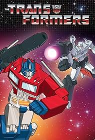

Transformers One is a Transformers film that dives into the orign story between Orion Pax and D-16. They were once brothers, miners, mining for their energy source energon. For it has been depleted since the Matrix of Leadership (A powerful atrifact that has the wisdom and essence of their creator Primus) has been lost. And towards the end, they became foes. What were the events that caused them to be this way?

Transformers is a film directed by Micheal Bay and is the first live action Transformers film, the story takes on about both warring factions (Autobots and Decepticons) fleeing Cybertron (Their planet) not only because of their civil war, but also to search for the AllSpark/The Cube (Created Cybertron and giver of life to the Transformers/Cybertronians) that apparently landed on Earth.
The Transformers G1 cartoon is the first ever Transformers film made, Made in 1984, and also known as the G1 (Generation 1) Transformers. The plot is about the two warring factions (Autobots and Decepticons) fleeing Cybertron (Their planet) due to their civil war and fell down to Earth. While the Autobots intend to protect Earth, the Decepticons plan to drain its energy just so that they can go back to Cybertron, the Autobots has allied with humans such as Spike Witwicky, Sparkplug, Carly, Chip, etc. While the Decepticons have the evil Dr. Arkeville. And in 1986, an official movie was created titled: The Transformers: The Movie